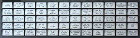
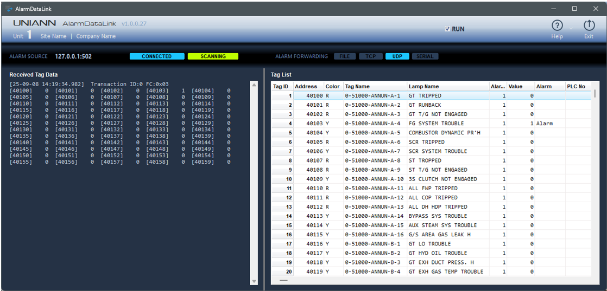
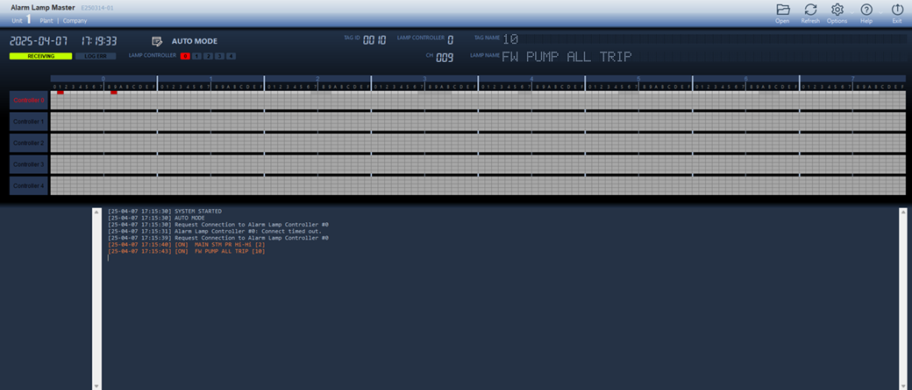
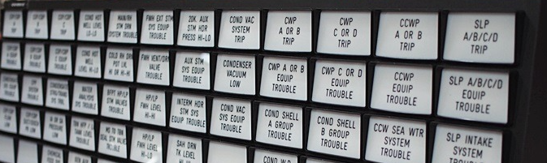

UNIANN™
Universal Alarm Annunciator
UNIANN™ Alarm Annunciator
UNIANN-W2310

벽면 설치형 알람 경보창 시스템
Overview
UNIANN-W2310은 UNIANN™ Alarm Annunciator 시리즈 중 벽면 설치형 알람 경보창 시스템입니다.
일반적으로 LED 램프로 구성된 경보창은 제어실 벽면에 매립 설치되며, 조작부 스위치 패널은 제어 콘솔 데스크에 별도로 설치하는 구조입니다.
이를 통해 제어실 환경에 최적화된 시인성과 운용 편의성을 동시에 제공합니다.
Advantage
- 경보 변경 시 별도의 경보창 공사 불필요 - 경보 조건 변경이나 추가 시에도 구조 변경 없이 유연하게 대응할 수 있습니다.
- 유연한 경보 램프 구성 및 명칭 변경 - 램프 색상, 명칭 등을 현장 요구사항에 맞게 손쉽게 조정할 수 있습니다.
- 높은 경보 식별성 확보 - 고휘도의 명확한 시각적 표시를 통해 운전자의 즉각적인 상황 인지를 지원합니다.
System Configuration
제품 구성
UNIANN-W2310은 경보 데이터를 수집하는 AlarmDataLink와 경보를 관리하고 경보창에 전송하는 AlarmLampMaster, 경보를 표시하는 경보창과 그 내부의 AlarmLampController, 콘솔 데스크에 설치되는 조작 Switch Panel로 구성되어 있습니다.
• Software-
- AlarmDataLink: 제어 설비(DCS/PLC)의 경보 데이터 수집 및 AlarmLampMaster에 전송

- AlarmLampMaster: AlarmDataLink로 부터 수신된 경보 신호를 각 경보 Lamp panel에 전송
-
- Alarm Lamp Panel: 벽면 설치형 경보 램프 표시창

- Alarm Lamp Controller: 램프 표시 제어기
- Switch Panel: 조작 버튼(Silence, Ack, Reset, Test)
구성 예시
• 벽면 설치형(UNIANN-W2310) 구성
• 벽면 설치형(UNIANN-W2310) + 콘솔 설치형(ZERA-LCDANN2310) 통합 구성

System Specifications
| 분류 | 항목 | 규격 |
|---|---|---|
| 알람 경보창 | 설치 형식 | 벽면 설치형 |
| 경보 램프 종류 | LED | |
| 램프 색상 | 6color(Red, Orange, Yellow, Green, Blue, White) * LED Lamp 모델에 따라 변경될 수 있습니다. | |
| 경보 Nameplate 재질 | Acrylic | |
| 경보명 표시 | 음각(engraving) 또는 인쇄(printing) | |
| 조작부 | 설치 형식 | 콘솔 데스크 설치 (위치 변경 가능) |
| 버튼 | 4button (SILENCE, ACKNOWLEDGE, RESET, TEST) | |
| 경보음 | 경보발생음 경보해제음 | |
| 운영 환경 | 운영체제 | Microsoft Windows 10, 11 |
| 네트워크 | Ethernet | |
| Alarm Log 저장 | 1file/day | |
| 경보 처리 | 국제산업표준 규격 | ANSI/ISA S18.1 |
| 경보 처리 시퀀스 | SEQUENCE R-1-2-9 | |
| 경보 데이터 수집 | 국제산업표준 Protocol | IEC 62541 OPC-UA MODBUS TCP |
| 처리 가능 Tag 수 | 65,535tag max. | |
| 수집 속도 | Alarm Source를 제공하는 장치의 성능에 따라 사용자 정의 설정 | |
| 경보 데이터 전송 | 전송 형식 | FILE TCP UDP SERIAL RS-232 SERIAL RS-422 |
| 사이버 보안 (option) |
보안 방식 | 물리적 단방향 통신(Unidirectional Communication) |
| Error Recovery | UNIANN Error Recovery Algorithm | |
| 전송 형식 및 Error 발생 확률 | UDP (≤ 8.47 x 10-145) SERIAL RS-232 (≤ 5.89 x 10-97) SERIAL RS-422 (≤ 5.89 x 10-97) | |
| 장애 처리 | 네트워크 | 네트워크 장애 발생 시 자동 재접속 |
| 비정상 종료 | 자동 재실행 | |
| 경보 서버 운영 감시 | 경보 서버 비정상 시 경보음 및 경보 신호 출력(Option) | |
| 사용자 정의 설정 | Lamp Color | 6color(Red, Orange, Yellow, Green, Blue, White) |
| 경보 RESET | 경보 해제 시 자동/수동 RESET 기능 지원 | |
| 경보 Tag 사용자 정의 설정 | 경보 Tag Name, Address, Lamp Color, Description |
* 상세 규격은 UNIANN™ Specification 문서를 참조 하십시오.
* 알람 경보창(Alarm Lamp Panel)의 외형 규격 등은 설치 환경과 고객 요구사항을 반영하여 최적 사양으로 적용됩니다.